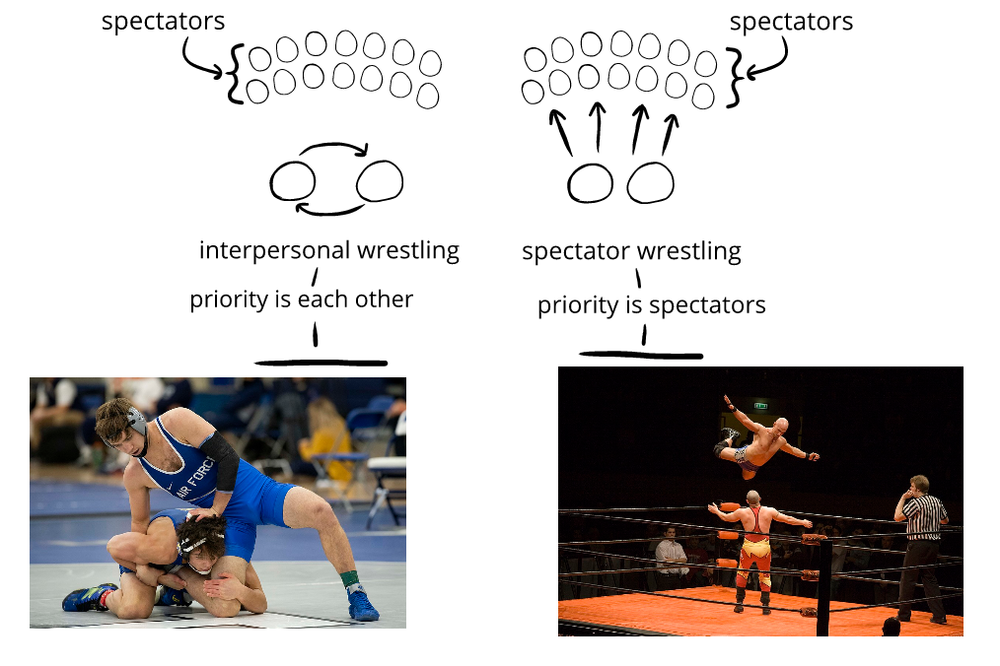

In this chapter, we’ll look at spectator entertainment—things were the emotional priority is on spectators:
After weeks of rehearsing, Sam and Jennifer are ready for the opening night of their play.
It's hard work, and they're nervous—but the audience laughs. (←emotional priority is on spectators↔acting is spectator entertainment)
Artem spends a long time modding a game.
It's tedious, but after testing, he knows he has something fans will enjoy. (←emotional priority is on others↔modding is spectator entertainment)
When the teacher calls on him, Xiaowei does a funny waddle to the front of the room, making the class laugh. (←emotional priority is on spectators↔clowning is spectator entertainment)
When Xiaowei does a funny waddle, what he cares most about isn't how he feels—it matters most how the people spectating feel.
Since his priority is on the experience of the spectators, waddling (or mod or play) is spectator entertainment.
We'll be talking about this throughout this chapter.
Priorities.
We can think about the difference between an interpersonal orientation or a spectator orientation by thinking about the difference between competitive wrestling and dramatized wrestling:
- Competitive wrestling is intense and interesting to participants—but not always as interesting to spectators. Casual spectators might see the wrestlers in odd-looking helmets and uniforms locked in a static grapple for a long time before something happens quickly and the match is over.
- Dramatized wrestling is designed to be intense and interesting to the audience—and how the participants feel is less important. In order to better commercialize wrestling, showrunners staged and performed scenes in a way that was easy to follow, exciting, visually stimulating, and so on—for the audience.

Even though they both might be called "wrestling," the priorities make them different.